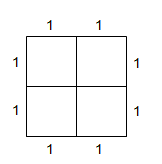

Page 1
São escolhidos cinco pontos, ao acaso, sobre a superfície de um quadrado
de lado 2. Mostre que pelo menos um dos segmentos determinados por dois
desses pontos tem comprimento, no máximo, igual a √2.
Casas
Pombos

Perceba que usando o teorema de Pitágoras, temos raiz(2) o tamanho
máximo de segmento de reta em qualquer área divida do quadrado. Pelo
princípio da casa dos pombos, você terá 2 pontos em alguma das áreas,
logo o segmento de reta desses pontosterátamanho de no máximo raiz(2).